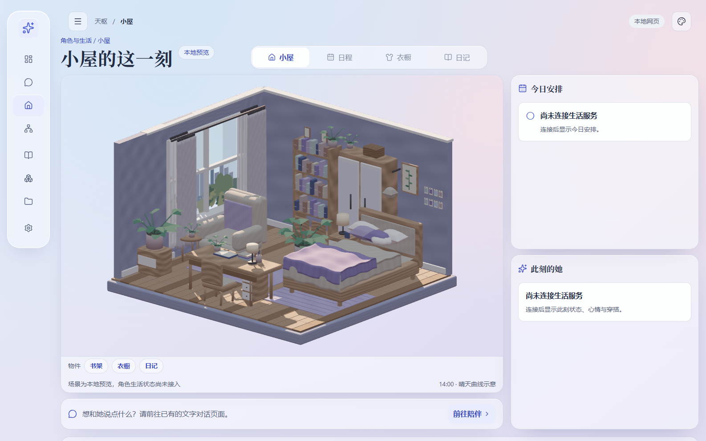

小屋重做 · 原图对照验收
以原概念图为基准。候选必须是实际浏览器的原始截图；此页只作并排和透明叠加，不加工截图、不生成相似度通过分数。
候选 B · 实际浏览器 1586 × 992 · 视觉验收未通过
原概念图 · 1586 × 992
候选 · 不代表通过载入真实浏览器截图后逐项核对

原图与候选叠加 · 核对轮廓、家具和人物位置
构图与比例人物形象与姿态家具与软装材质与纹理光照与接触页面层级
六项分别验收，任何明显占位或风格偏差都不能靠其他项抵消。首次校准：1586 × 992、DPR 1、浅色、14:00、减少动态。实际截图应保留代码版本、资产版本和采集条件。
原图指纹与锚点记录 · 重做方案